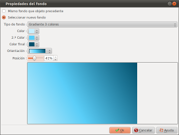

Introducción
La ventana de diálogo "Propiedades del fondo" permite configurar
el fondo para la diapositiva:

Este diálogo se abre haciendo doble-click en el fondo de la
zona de la diapositiva, en la línea de tiempo.
Descripción del diálogo
• Mismo fondo que objeto
precedente.
Si seleccionamos esta
opción, la diapositiva no tendrá ninguna
definición para el fondo, pero usará el mismo fondo
que la diapositiva anterior:
- Si la diapositiva anterior no tiene un fondo ni se ha
definido, la comprobación sigue hacia atrás,
hasta encontrar la diapositiva que realmente tiene un un
fondo definido.
- Y si no encontramos ninguna diapositiva con fondo
configurado, se usará un cuadro negro.
• Selecciona un nuevo fondo
Si seleccionamos esta
opción, la diapositiva tendrá su propia
definición de fondo.
En este caso, las zonas siguientes permiten el ajuste para el
fondo.
| Fondo sólido |
Selecciona un color
plano. |
| Gradiente 2 colores |
Seleccionar 2 colores |
| Gradiente 3 colores |
Seleccionar un
gradiente con 3 colores |
| Imagen desde biblioteca
|
Selecciona un fondo de
imagen desde la biblioteca |
Imagen desde disco
|
 Selecciona un archivo de imagen. Seleccionar un
archivo existente en nuestro disco.
Selecciona un archivo de imagen. Seleccionar un
archivo existente en nuestro disco.
 Se abre un
diálogo
Encuadrar image y
diálogo de ajuste para regular el encuadre
de la imagen y hacer correcciones. Se abre un
diálogo
Encuadrar image y
diálogo de ajuste para regular el encuadre
de la imagen y hacer correcciones. |
Consulta también
ffDiaporama 1.0
 Configurando el
fondo
Configurando el
fondo